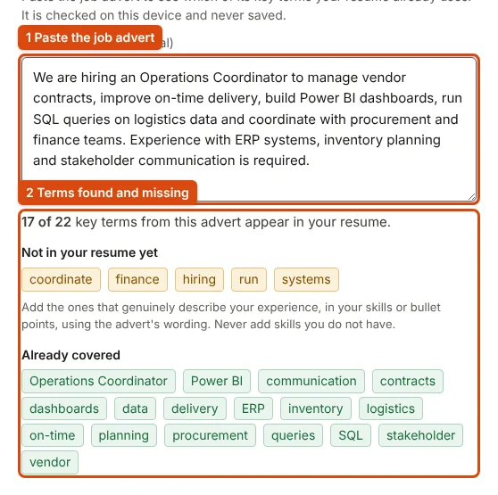

YOUR NAME
Resume builder
Fifteen ATS-friendly templates, a live preview and free PDF, Word and text downloads.
Your details stay on this device
Resume editor
Around 40 to 80 words reads best. Lead with your strongest, measurable result.
Section heading on the resume
Section heading on the resume
Section heading on the resume
Section heading on the resume
Each row prints as “Label: skills”. Type a short name in the left box to rename a label, or leave it empty to use the template’s wording.
Section heading on the resume
Writing tips
Use the STAR bullet formula: [Action verb] + [Context or challenge] + [Quantified result].
Strong action verbs: Directed, Orchestrated, Engineered, Spearheaded, Accelerated, Formulated, Overhauled, Optimized, Standardized, Consolidated.
ATS formatting: Keep sections standard and linear. Avoid graphic skill ratings, tables and photos, which many recruitment scanners cannot extract.
Template
Every template is a single column with standard fonts and real text. Switching keeps all your content.
Type and page
Sections
Reorder sections or hide ones you do not need. Hiding keeps what you wrote.
Check before you send it
These checks catch common omissions. They do not simulate an employer's ATS.
Compare with a job description
Paste the job advert to see which of its key terms your resume already uses. It is checked on this device and never saved.
Download your resume
Every file has real, selectable text. Choose the type the employer or portal asks for.
PDF Recommended
Looks the same everywhere. Best for job portals and email.
Word (.docx)
Editable. Use it when an employer asks for a Word file. Lines may wrap differently.
Plain text (.txt)
For pasting into the text boxes of an online application form.
No template can guarantee how an employer's system reads a file. Our ATS-friendly resume guide explains what matters.
Keep your work
The draft lives in this browser only. Do not turn it on for a shared or public computer.
Local saving disabled
Resume live preview
Your resume starts here. Add your contact details or try a sample.
How to build a resume here that portals and recruiters can read
The builder is for job seekers who need a clean, single-column resume quickly, especially freshers applying through campus portals and company career sites. You type into the sections on the left, the page on the right updates as you go, and the same content downloads as PDF, Word and plain text.
- Write in the Write step. Fill Contact details first; the name is required before any download. Add one entry per job, internship or project, and keep each bullet to one result.
- Choose a template in Style. All templates are single-column. Watch the page count above the preview while you edit.
- Check it in Review. Each finding says what is missing and where, and Fix takes you to the exact field. Paste a job advert below the checklist to see which of its terms your resume already uses.
- Download. Use the PDF for portals and email, the Word file only when an employer asks for an editable copy, and the plain text for pasting into the text boxes of an application form.

What the exports look like
We loaded the built-in sample resume (the one Try a sample fills in) and downloaded every format. It fits on one page; the PDF was 12.2 KB (12,450 bytes), the Word file 18.8 KB and the plain text 3.1 KB. A PDF made of real text is far smaller than a scan or photo of a printed resume, and its words can be selected and searched by software. Pasting an operations advert into the comparison showed 17 of its 22 key terms already in the sample and listed the five that were not.
Common mistakes
- Leaving the summary generic. Two or three lines about the role you want and the evidence you have; see summary examples for freshers.
- Listing duties instead of results. "Handled vendor contracts" says less than one line with a number in it; see bullet points that show results.
- Adding every missing keyword. The comparison shows gaps; add a term only if it truly describes your work.
- Uploading the Word file where a PDF is asked for. Lines can wrap differently in another word processor.
- Saving a draft on a shared computer. The draft switch is off by default; leave it off in a cyber café.
When not to use this builder
- When the employer or institution gives its own application or bio-data format. Fill that in instead.
- When you need a photo, a two-column layout or a designed portfolio. The templates are deliberately plain, single-column text.
- When you want the resume written for you. The builder formats and checks what you write; it does not generate content.
For the format decisions, read what makes a resume readable by applicant tracking systems, whether to use one page or two, how to tailor it to a job advert and how to send it in a short application email.
Frequently Asked Questions
Everything you need to know about ATS readability, file exports, and candidate privacy.
What makes a resume ATS-friendly?
An ATS-friendly resume uses a clean single-column structure, standard section headings (Work Experience, Education, Skills), standard system typography, and genuine vector text. It avoids text boxes, tables, multi-column sidebars, skill rating graphics, and images that scramble automated text parsers like Workday, Taleo, and Lever. Learn more in our ATS-friendly resume guide.
Does ApplyReady export genuine vector text PDFs or rasterized images?
ApplyReady generates genuine ISO 32000 compliant vector text PDFs right in your browser. Every word is real, selectable, and searchable text, ensuring automated applicant tracking systems can extract your work history without parsing errors.
Can I export my resume to Microsoft Word (.docx) format?
Yes. ApplyReady provides a built-in, client-side OOXML Word (.docx) generator. You can download an editable Microsoft Word document that preserves the typography, bullet formatting, and structure of your selected template.
Is my resume data stored, uploaded, or shared with third parties?
No. Your details never leave your computer or phone. All processing occurs entirely in memory within your browser session. If you choose to save a draft, it is stored locally on your device in your browser's private storage.
Are the 15 resume templates free, and are there any watermarks?
All 15 ATS resume templates are 100% free with no watermarks, no account registration required, and no hidden export paywalls. You can switch between any template instantly without losing your typed content.
How does the on-device Job Description keyword matcher work?
In the Review tab, paste the job description you are targeting. ApplyReady extracts the core technical skills, credentials, and requirements on-device without network calls, and checks them against your resume so you can tailor your bullet points before applying.
Which template should college students and freshers choose for campus placements?
Freshers and students should choose the "Campus Placement / Fresher" or "Graduate / Early Career" templates. These templates prioritize university education, degrees, CGPA/percentage, academic projects, technical skills, and internships before professional experience.